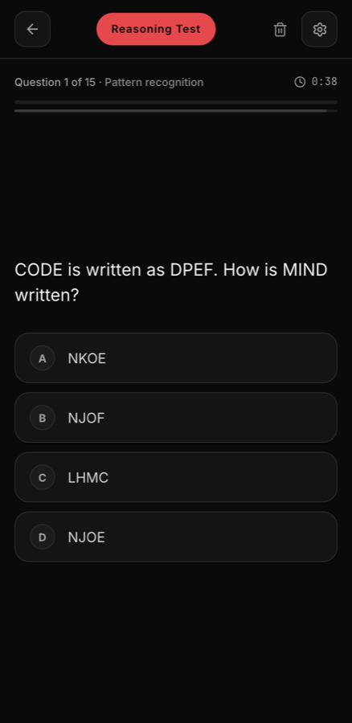

Sequences
Find the rule a series is following and continue it — including series that describe themselves.
Most in-app IQ tests ask a model to guess a number, which is why the number changes if you take the same test twice. This one does not work that way.
A fixed bank of questions with known answers. Each sitting samples fifteen of them, two from every domain and the rest weighted to the harder end, then shuffles the options. Scoring is arithmetic: correct answers weighted by difficulty, a small speed factor, mapped onto a familiar 100-centred scale.
It is called a reasoning index, not an IQ. A clinical score is standardised against a population under supervised conditions; fifteen questions on a phone is not that, and saying otherwise would be dishonest.
Find the rule a series is following and continue it — including series that describe themselves.
Analogies where the obvious near-synonym is the wrong answer and the relation is the right one.
What follows and, more often, what does not — necessary versus sufficient, and alibis that only look complete.
Codes, grids and spatial questions: the shifted cipher, the magic square, the painted cube.
Arithmetic with a trap in it — the bat and the ball, the lily pads, the average speed that is not the average.
A short scenario with numbers in it: pricing, worker-days, overlapping sets, and a base rate most people ignore.
Each question is timed by difficulty. Leave halfway and it resumes where you stopped; finish and the report is immediate, because nothing has to be asked of a model.

Every sitting samples a different fifteen, so a second run is a new test.